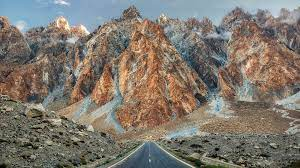
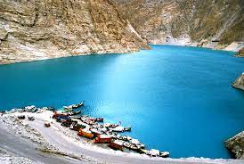
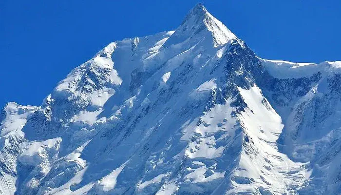
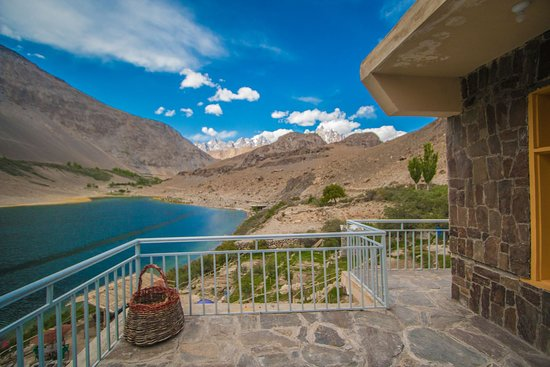
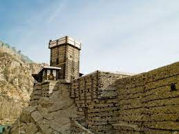

THE HUNZA VALLEY
The Ruby mines are famous tourist attractions. The Hunza valley is popular for its snow-capped and rough mountains. Many people came to Hunza just to get a few glimpses of the shining ice wall of the Rakaposhi Mountain. Other popular mountains in Hunza include Passu Peak, Ultra Peak, and Kuksel Sar.
The people of Hunza are extremely warm, welcoming, and friendly. They are food lovers that enjoy a wide range of food, especially sweet food, nuts, and fruit. In fact, the diet of the people of Hunza and Gilgit has long inspired much interest because of the historically long lives of the Hunza-ites.
THE PASU CONES
Tupopdan 6,106 metres (20,033 ft) also known as 'Passu Cones' or 'Passu Cathedral', lies to the north of the Gulmit village in Gojal Valley. It is the most photographed peak of the region. Also nearby are the high peaks of Pasu Sar, Shispare Sar, and Batura.

THE EAGLE NEST
Just the peak behind the hunza main bazaar is EAGLE NEST , it is an extremely tricky drive and requires a powerful engine but the road is quite good , the destination ofcourse is worth it as the sunset enabled us to see the famous golden peaks of hunza particulary the ladyfinger

ATTABAD LAKE
Attabad Lake is a lake located in the Gojal region of Hunza Valley in Gilgit−Baltistan, Pakistan. It was created in January 2010 as the result of a major landslide in Attabad . It looks like an ocean and it is by far the biggest lake in north . Its inexplicable blue water is unique and it is the best place to go to in hunza

RAKAPOSHI
Rakaposhi is a mountain in the Karakoram mountain range in the Gilgit-Baltistan territory of Pakistan, about 100 km (62 mi) north of the city of Gilgit.[1] It is ranked 27th-highest in the world. Rakaposhi rises over the Bagrot, Nagar, and Danyor
Rakaposhi is the only mountain in the world with more than 5,000 meters height between base camp and the summit; by contrast all of the other tallest mountains in the world have less than 5,000 meters from base camp to top.[citation needed]
The first successful recorded ascent by non-natives was in 1958 by Mike Banks and Tom Patey, members of a British expedition, via the Southwest Spur/Ridge route.

BORITH LAKE
Borith lake lies approximately 2 km to the north of Gulmit, a saline body of water occupying a small hollow at an elevation of 2,500 meters (8,200 feet). The lake can be reached via a 2 km unpaved jeep route from Husseini village, which lies adjacent to Gulmit village. It is also accessible by a 2-3 hour trekking route directly from Gulmit, across the end of the Ghulkin glacier.

ALTIT FORT
The word 'Altit' means 'this side down' and the area around the fort is inhabited by Burusho people. In the 16th century the local prince married a princess from Baltistan who brought master Balti craftsmen to built two forts (Altit and Baltit forts). The people of Altit are said to belong to the White Huns, although not much research has gone into the matter. There are several theories about their origin but local indigenous origin holds much value among the people. It is also said[by whom?] that the present language Burushaski was brought here by the White Huns in 47 A.D but there is no link between Burushaski and any other language of today. According to the legend the first name for Altit village was Hunukushal, meaning the village of Huns.[4] The Huns came from the Huang-Ho valley in China. The name later changed to Broshal, translated as a village of Bruchiski speakers. They were spirit worshipers as Shamanism was in practice and also followed Buddhism and Hinduism. In the 15th century Islam was introduced. Around 1830 in turn many converted to Ismailism
